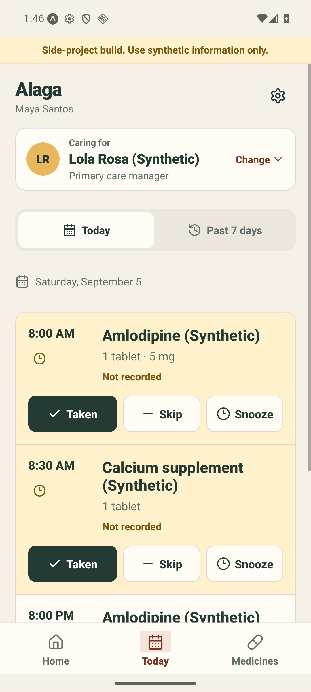
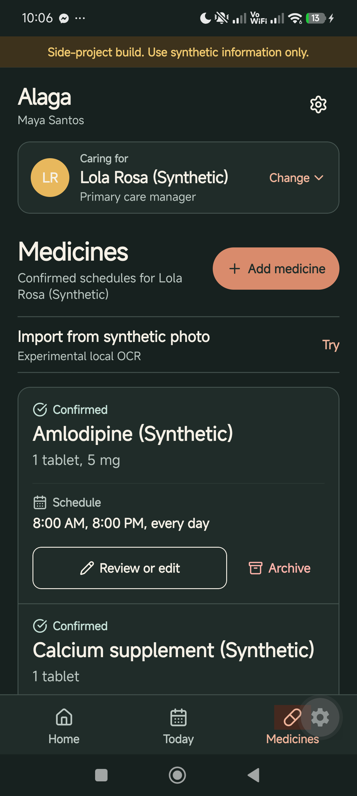

Care, kept in context.
A medicine care log our team is building to help families coordinate schedules, record doses, and review care history.

A clear starting point for care
The Home screen puts the patient first, followed by the next scheduled dose and the day’s recorded progress.
- Patient context stays visible above medicine details.
- Unrecorded doses are flagged for review without assuming they were missed.
- Caregivers can move to the daily care log or confirmed medicines.

A chronological care log
Today groups scheduled doses in time order and gives each record an explicit outcome.
- Pending records remain labeled “Not recorded.”
- The app offers Taken, Skip, and Snooze actions with confirmation.
- The full project preserves attributed history and corrections.
The controls inside this image are part of the Android screenshot. Use the tabs above to explore the preview.

Confirmed medicine schedules
The Medicines screen brings together the synthetic patient’s confirmed medicine records and schedule details.
- Strength, dose, and timing remain separate.
- Review and archive actions preserve the care context.
- Experimental OCR starts a draft for review rather than silently confirming extracted instructions.
This screenshot also shows the project’s dark theme.
Built with my team
My submitted contribution improves reminder planning so repeated dose occurrences schedule once and use the latest requested time. Regression tests cover repeated entries, revised times, and existing reminders.
Project repository ↗My contribution · PR #6 ↗Explore Boja →